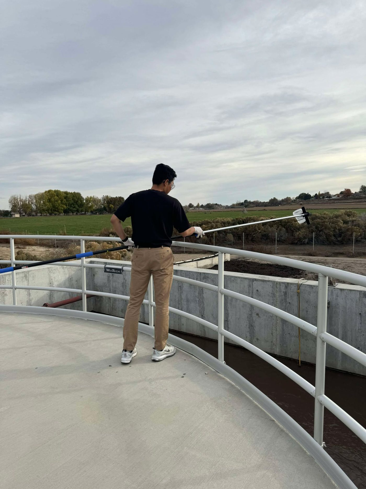
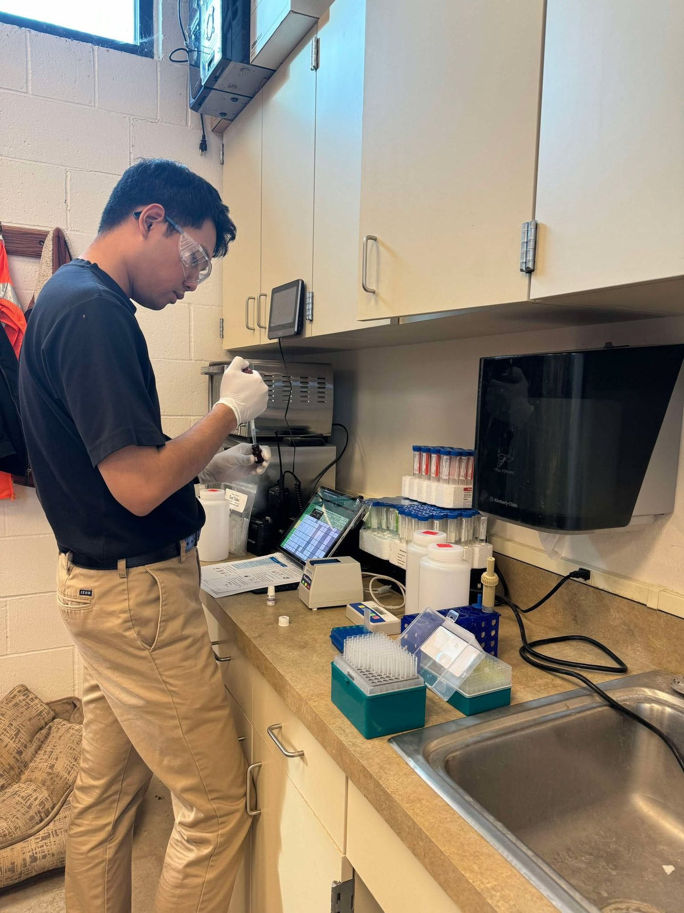
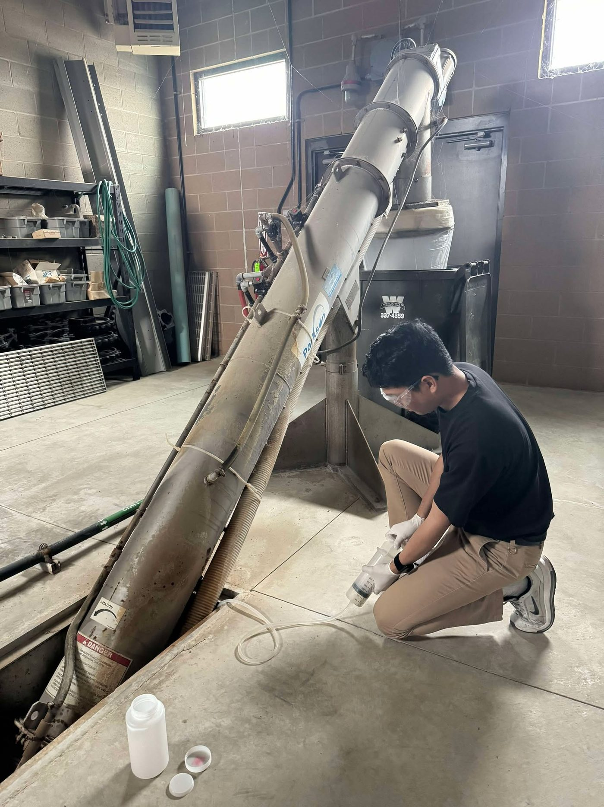

Pananaliksik
Mga interes
Malawak ang aking interes sa pamamahala ng tubig: kung paano nakikita sa pisikal na imprastraktura at sa serbisyong talagang natatanggap ng mga sambahayan sa gripo ang paraan ng pag-oorganisa, pagpopondo, at pamamahala ng isang sistema ng tubig. Mahalaga sa akin ang agwat sa pagitan ng pagganap ng sistema sa papel at ng karanasan ng mga taong umaasa rito, at ang mga lugar kung saan karaniwang pinakamalawak ang agwat na iyon, tulad ng maliliit at rural na sistema at mga sektor na watak-watak.
Kasalukuyan kong tinutuklas ang mga direksiyon ng pananaliksik sa Pilipinas, kung saan hatid ng pinaghalong water district, lokal na pamahalaan, pribadong concessionaire, at samahang pang-komunidad ang suplay ng tubig. Patuloy ko ring sinusuri, bilang paghahambing, ang maliliit at rural na sistema sa Estados Unidos, kung saan isang taon kong pinag-aralan ang pagtanggap ng teknolohiya at ang regionalization. Inhinyeriya ang aking pinag-aralan, at nais kong manatiling nakaugat doon ang gawain: sa nasusukat na pagganap, sa mga desisyon sa disenyo, at sa mga kasangkapang magagamit ng tao.
| Tema | Saklaw |
|---|---|
| Pamamahala at pagganap | Paano nagiging presyon, kalidad, pagpapatuloy, at gastos sa sambahayan ang mga kaayusang institusyonal |
| Maliliit at rural na sistema | Pagtanggap ng teknolohiya, technical assistance, konsolidasyon at regionalization |
| Mga pamamaraang pang-komunidad | Fieldwork na nakaugat sa karanasan ng mga residente, kasabay ng mga tala ng utility at audit |
| Mga bukas na kasangkapan | Mga dashboard at web tool na nagpapasimple at nagpapabukas ng impormasyon tungkol sa tubig at baha |
Mga nakaraang pananaliksik
-
Mga hadlang sa pagtanggap ng teknolohiya sa maliliit at rural na sistema ng tubig
Pag-aaral sa pamamagitan ng mga panayam sa iba't ibang stakeholder: mga operator ng utility, vendor ng teknolohiya, consulting engineer, tagapagbigay ng technical assistance, at eksperto sa patakaran. Sinuri sa pamamagitan ng matrix coding upang matukoy kung bakit natitigil ang mga may-potensyal na teknolohiya bago makarating sa maliliit na komunidad. Kasabay nito, isang pagsusuri ng gastos ng regionalization para sa Duck River watershed sa Tennessee, batay sa mga tala ng permit at mga nakaraang kahilingan sa State Revolving Fund.
2025 hanggang 2026Washington, D.C. / remote -
Mga retrofit na teknolohiya sa oksihenasyon para sa wastewater treatment
Pagsubok sa pagiging posible at pagganap ng isang retrofit na sistema ng paghahatid ng mataas na konsentrasyon ng dissolved oxygen sa isang gumaganang planta: masinsinang pagkuha ng sample (BOD, COD, nitrogen, phosphorus, TSS, ATP), pagsusuring estadistikal at machine learning ng ugnayan ng dissolved oxygen, aktibidad ng biomass, at pag-upo ng putik (sludge settleability), at pagtingin sa mga hadlang sa pagitan ng inobasyon at pagtanggap.
2023 hanggang 2025Boise, Idaho -
Mga emerging contaminant sa mga yugto ng paglilinis ng wastewater
Kung paano hinaharap ng mga sistema ng wastewater sa Idaho ang mga gamot, PFAS, microplastic, at iba pang di-regulado na pollutant: saan nahuhuli ang patakaran, ano ang pasanin ng mga utility, at gaano kahanda ang imprastraktura. Nagmumungkahi ang pag-aaral ng balangkas na gagabay sa patakaran at pamumuhunan sa hinaharap.
2024 hanggang 2026Boise, Idaho
Sa field
Mga araw ng pagkuha ng sample sa isang wastewater treatment plant sa Idaho noong master's ko.

Grab sample ng activated sludge mula sa oxidation ditch. 
Gawain sa laboratoryo ng planta. 
Pagkuha ng sample sa headworks.
Sa lab, pinabilis
Mga timelapse mula sa mga araw sa lab noong graduate school. Kusang tumutugtog ang mga ito habang nasa screen, walang tunog, at may sariling pause button ang bawat isa.
Paghahanda ng mga sample sa bench. Pag-aayos ng mga bote ng sample. Isang titration, mula simula hanggang dulo. Gawain sa lab nang naka-uniporme. Pagpupuno ng carboy. Isang mahabang araw sa lab, mula sa kabilang dulo ng silid.
Mga kasangkapan
Bumubuo rin ako ng mga libreng web tool para sa impormasyong pampubliko, pananaliksik at pagtuturo, kabilang ang BahaWatch na dashboard ng baha at mga virtual na laboratoryo ng fluids.
Pagtuturo
-
Lab instructor, CE 323: Environmental and Fluids Laboratory
Nanguna sa mga hands-on na sesyon sa pagsusuri ng kalidad ng tubig at wastewater (BOD, turbidity, pH, dissolved oxygen) at fluid mechanics, at nagturo sa mga estudyante na suriin ang datos ng eksperimento gamit ang estadistika at mga graph. Binuo ko para sa kurso ang mga virtual na laboratoryo ng fluids sa itaas.
Fall 2025 -
Teaching assistant, CE 220: Coupled Environmental Processes
Spring 2025 -
Guest lecturer, CE 320: Environmental Engineering
Distribusyon ng bilis ng pag-upo ng mga partikulo at mga isoconcentration contour plot, itinuro gamit ang simpleng Python sa Google Colab.
Oktubre 2024